एक ऐप. इसे इस्तेमाल करने के दो तरीके.
BP Digitizer आपको ब्लड प्रेशर की रीडिंग दर्ज करने, उनका इतिहास देखने और अपना रिकॉर्ड रखने में मदद करता है। नेटिव Android ऐप इस्तेमाल करें या ब्राउज़र में PWA खोलें। दोनों आपके अपने डिवाइस पर कैमरे से मॉनिटर पढ़ सकते हैं, और किसी के लिए खाते की ज़रूरत नहीं है। वेब वर्ज़न, जो पहले यहाँ wBP Digitizer के नाम से था, इसी प्रोजेक्ट का हिस्सा है।
वेब के लिए BP Digitizer
PWA यही प्रोजेक्ट आपके ब्राउज़र में लाता है, कैमरे से स्कैनिंग, मैन्युअल एंट्री, चार्ट और एक्सपोर्ट के साथ। रीडिंग आपके ब्राउज़र के IndexedDB में स्थानीय रूप से रहती हैं, और ऐप GitHub Pages से दिया जाता है, जिसके पीछे कोई सर्वर, खाता या आमंत्रण नहीं है। इसे पास रखने के लिए होम स्क्रीन पर इंस्टॉल करें।
GitHub ↗ पर वेब स्रोत का अन्वेषण करें
वेब ऐप के अंदर
इन स्क्रीनशॉट की सभी रीडिंग और प्रोफ़ाइल विवरण काल्पनिक हैं।
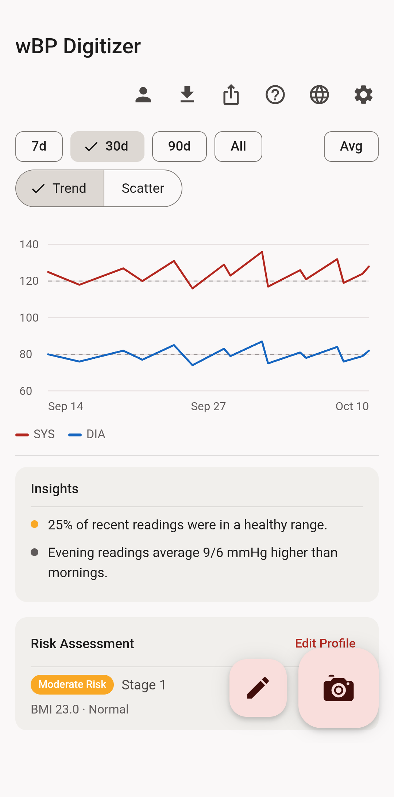
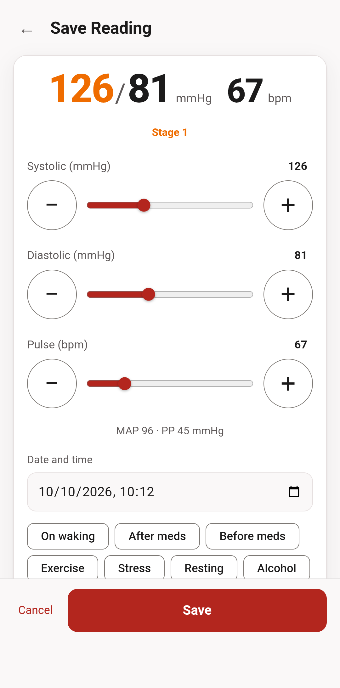
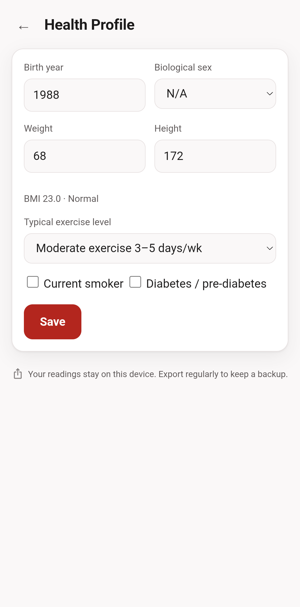
वेब सुविधाएँ
- 📱 स्थानीय-प्रथम और PWA: होम स्क्रीन पर इंस्टॉल होता है और ऑफ़लाइन काम करता है। रीडिंग आपके ब्राउज़र के IndexedDB में रहती हैं और कभी भी कहीं नहीं भेजी जातीं।
- 📷 कैमरे से पढ़ना, डिवाइस पर ही: कैमरे को तीन पंक्तियों वाले सीधे मॉनिटर की ओर करें, और आपके ब्राउज़र में चलने वाले मॉडल SYS, DIA और पल्स पढ़ते हैं। सहेजने से पहले आप तीनों मान पुष्टि करते हैं, और जो फ़ोटो भरोसे से न पढ़ी जा सके उसे अंदाज़ा लगाने के बजाय अस्वीकार कर दिया जाता है।
- ✏️ तेज़ प्रविष्टि: आपकी पिछली रीडिंग से शुरू होने वाले स्लाइडर, संख्या फ़ील्ड और दबाकर रखने पर बदलने वाले चरण।
- 📈 व्यापक चार्ट: रुझान चार्ट (सिस्टोलिक + डायस्टोलिक, 120/80 संदर्भ रेखाएं) और एक सिस्टोलिक-बनाम-डायस्टोलिक बिखराव। 7/30/90 दिन और सर्वकालिक सीमाएँ।
- 🧠 स्मार्ट एनालिटिक्स: बर्स्ट औसत पतन रीडिंग को एक बिंदु पर वापस ले जाया जाता है। डिवाइस पर गणना की गई अंतर्दृष्टि (सुबह बनाम शाम, सीमा में समय, स्वस्थ धारियाँ, संदर्भ टैग)।
- 🩺 नैदानिक तर्क: AHA ज़ोन (सामान्य / बढ़ा हुआ / स्टेज 1 / स्टेज 2 / संकट), MAP और पल्स प्रेशर, BMI, और आपकी हेल्थ प्रोफ़ाइल से जोखिम आकलन।
- 📄 निर्यात एवं रिपोर्ट: CSV और JSON में इम्पोर्ट और एक्सपोर्ट, साथ ही प्रिंट और डाउनलोड करने लायक PDF रिपोर्ट।
- 🔐 एन्क्रिप्टेड बैकअप: अपनी रीडिंग और प्रोफ़ाइल को अपने पासफ़्रेज़ से एन्क्रिप्ट की गई फ़ाइल में सहेजें, और किसी दूसरे डिवाइस पर वापस लाएँ। खोया हुआ पासफ़्रेज़ कोई वापस नहीं ला सकता।
- 🌐 वैश्विक: 12 भाषाएँ, Android ऐप से ली गईं, दोबारा अनुवाद नहीं की गईं, अरबी के लिए दाएँ से बाएँ लिखने के समर्थन के साथ।
एंड्रॉइड के लिए BP Digitizer
नेटिव Android ऐप कैमरे से मॉनिटर को पूरी तरह फ़ोन पर ही पढ़ता है, साथ में तेज़ मैन्युअल एंट्री, ट्रेंड व्यू, Health Connect, PDF एक्सपोर्ट और रिमाइंडर। इसे इंटरनेट की अनुमति नहीं है, और इसके लिए Android का क्लाउड बैकअप और एक फ़ोन से दूसरे फ़ोन में ट्रांसफ़र बंद है, इसलिए जब तक आप एक्सपोर्ट न करें, आपकी रीडिंग फ़ोन पर ही रहती हैं। यह Android 8.0 या उसके बाद वाले ARM64 फ़ोन पर चलता है।
ऐप F-Droid को भेजा गया है और अभी डाउनलोड के लिए उपलब्ध नहीं है। इसके बजाय वेब संस्करण खोलें ↗
GitHub पर Android का सोर्स कोड देखें ↗
Android गोपनीयता नीति पढ़ें ↗
एंड्रॉइड ऐप के अंदर
वर्ज़न 1.6.2 से लिए गए। सभी रीडिंग और प्रोफ़ाइल मान काल्पनिक हैं।
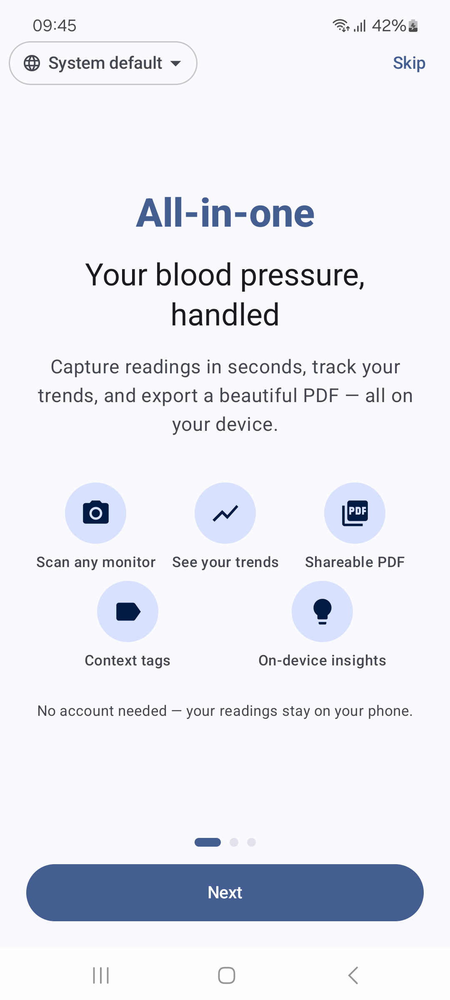
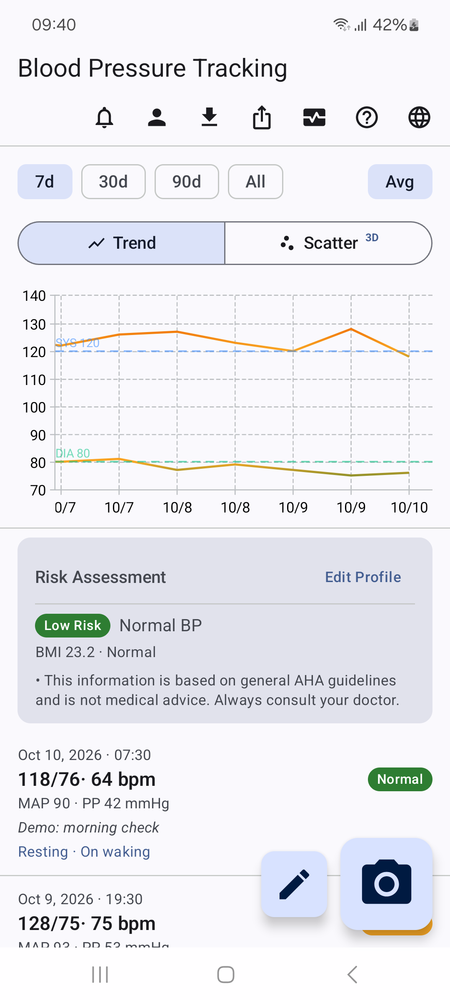
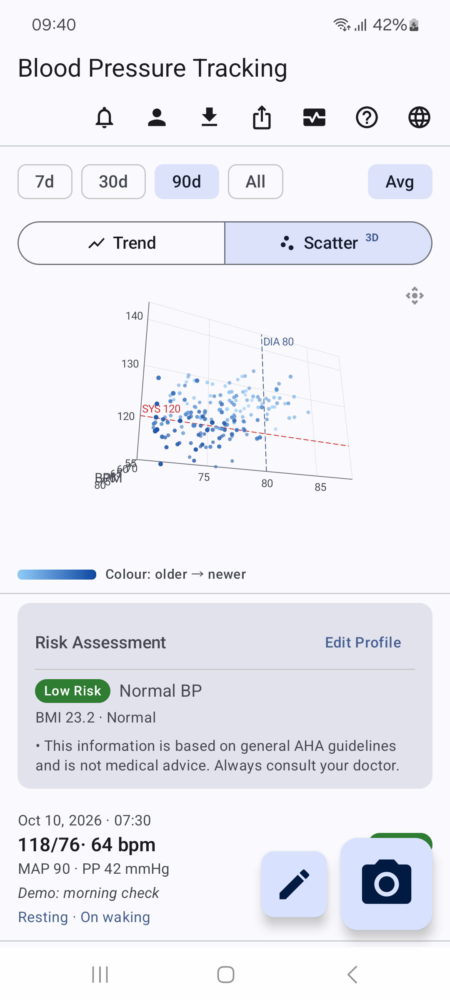
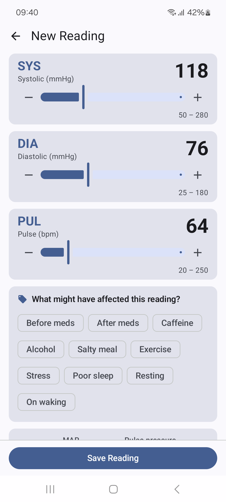
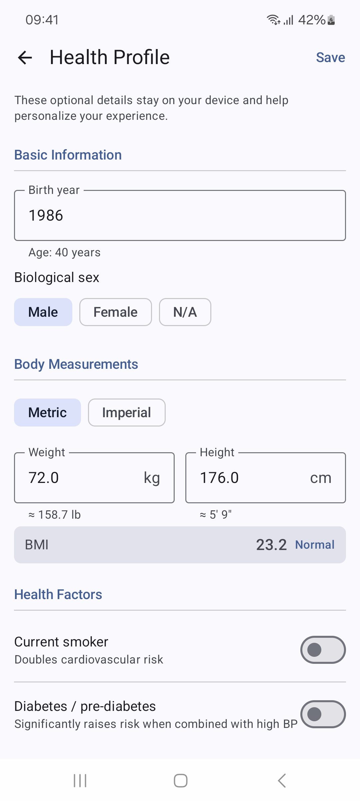
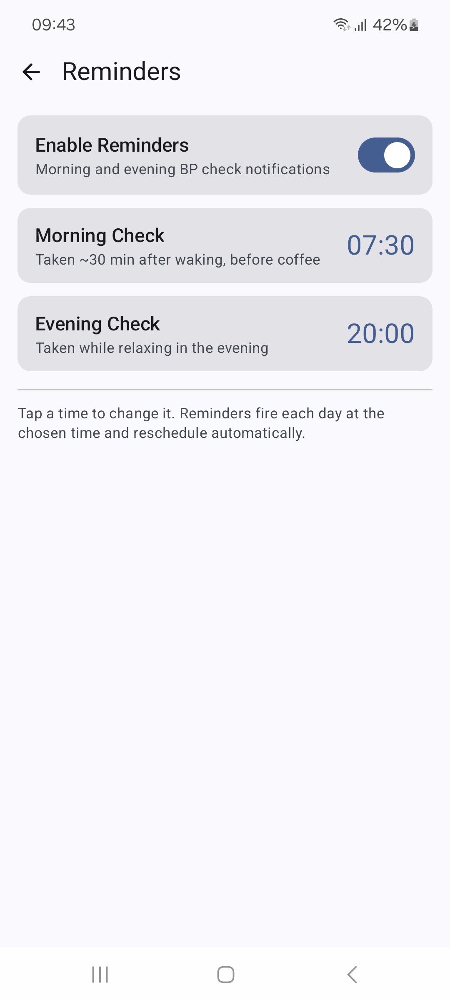
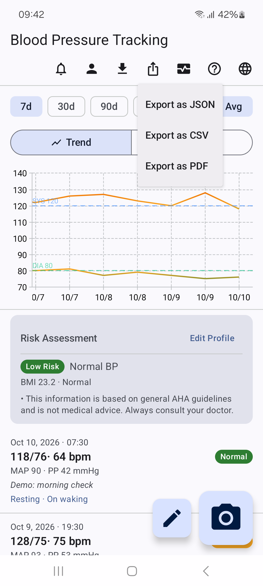
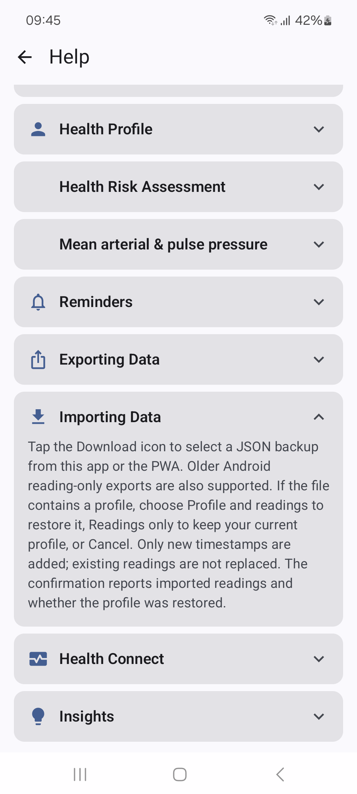
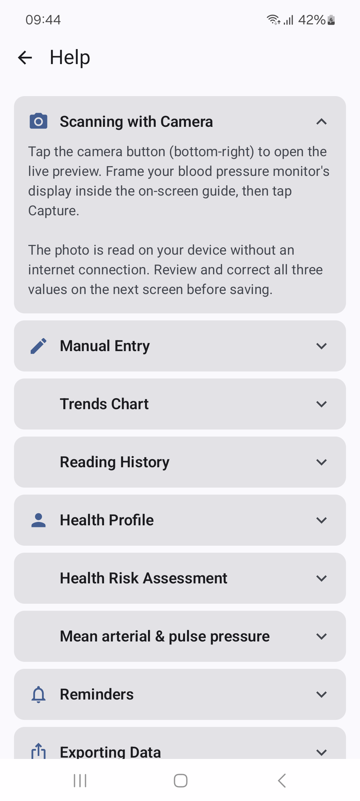
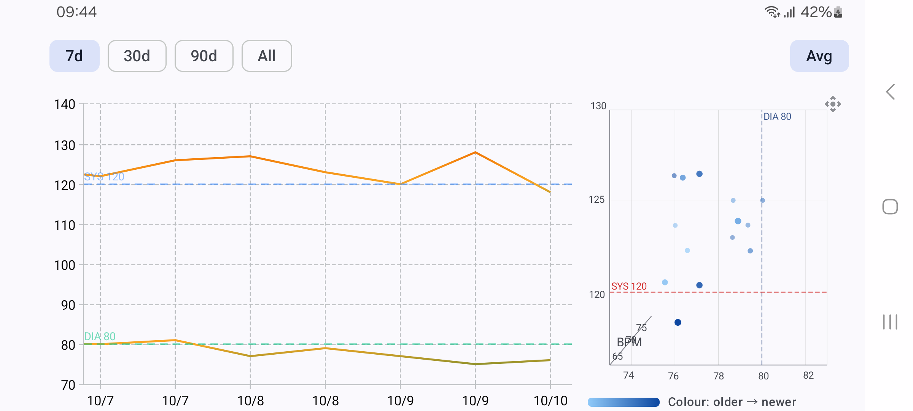
एंड्रॉइड सुविधाएँ
- 🏃 सक्रिय जीवनशैली के लिए निर्मित: आपके कदमों, वर्कआउट और नींद के साथ-साथ रक्तचाप एक प्रमुख स्वास्थ्य मीट्रिक है। इसे सेकंडों में लॉग इन करें और इसे उस दिनचर्या का हिस्सा रखें जो आपको गतिशील बनाए रखती है।
- ✏️ अपनी रीडिंग निःशुल्क लॉग करें, कुछ ही सेकंड में: तेज़, टैप-अनुकूल स्लाइडर आपको क्षणों में सिस्टोलिक, डायस्टोलिक और पल्स सेट करने देते हैं। पूरी तरह से मुफ़्त, ऑफ़लाइन काम करता है, और किसी खाते की आवश्यकता नहीं है - पहली बार ऐप खोलते ही ट्रैकिंग शुरू करें।
- 📷 या ऑफ़लाइन कैमरे से स्कैन करें: टाइप नहीं करना चाहते? अपने मॉनिटर के डिस्प्ले की फ़ोटो लें, और ऐप में शामिल मॉडल बिना इंटरनेट कनेक्शन के आपके फ़ोन पर ही मान पढ़ लेते हैं। यह मुफ़्त है, और सहेजने से पहले आप हमेशा मान जाँचते हैं।
- 📈 अपने रुझान देखें: देखें कि आपकी संख्याएँ दिनों, सप्ताहों और महीनों में कैसे बदलती हैं। ट्रेंड लाइन और 3डी स्कैटर के बीच स्विच करें जिसे आप सिस्टोलिक, डायस्टोलिक और पल्स का एक साथ पता लगाने के लिए उंगली से घुमा सकते हैं। स्मार्ट "एवीजी" स्मूथिंग बैक-टू-बैक रीडिंग को एक एकल, ईमानदार डेटा बिंदु में विलय कर देता है, ताकि आपका रुझान वास्तविकता को प्रतिबिंबित कर सके। दोनों चार्ट साथ-साथ देखने के लिए फ़ोन घुमाएँ।
- 🏷️ देखें कि आपके नंबरों में क्या बदलाव आता है: किसी भी पाठ को संदर्भ के साथ टैग करें - व्यायाम, कैफीन, नमकीन भोजन, खराब नींद, तनाव - और पता लगाएं कि आपकी गतिविधि और जीवनशैली समय के साथ आपकी संख्याओं को कैसे आकार देती है।
- ❤️ हेल्थ कनेक्ट से जुड़ता है: डैशबोर्ड से अपनी रीडिंग Android Health Connect में कॉपी करें, ताकि ब्लड प्रेशर आपकी गतिविधि, वर्कआउट और दूसरे फ़िटनेस डेटा के साथ रहे। यह वैकल्पिक है और सिर्फ़ तभी होता है जब आप चुनें।
- 📄 अपना खुद का रिकॉर्ड रखें: JSON बैकअप, CSV फ़ाइल या चार्ट और रीडिंग वाली कई पेज की PDF रिपोर्ट एक्सपोर्ट करें, और इस ऐप या वेब वर्ज़न के बैकअप इम्पोर्ट करें।
- ⏰ लगातार आदत बनाएं: वैकल्पिक सौम्य अनुस्मारक आपको प्रत्येक सुबह और शाम एक ही समय पर लॉग इन करने में मदद करते हैं, ताकि आपके रुझान पूर्ण रहें।
- 🔒 डिज़ाइन द्वारा निजी: ऐप को इंटरनेट की कोई अनुमति नहीं है। कोई खाता नहीं, कोई क्लाउड साइन-अप नहीं, कुछ भी बेचा या साझा नहीं किया जाता। कॉपी रखने या नए फ़ोन पर जाने के लिए JSON बैकअप एक्सपोर्ट करें। आपके आँकड़े सिर्फ़ आपके हैं।
- 🌐 12 भाषाएँ: अंग्रेज़ी, अरबी, चीनी, फ़्रेंच, जर्मन, हिंदी, जापानी, कोरियाई, पुर्तगाली, रोमानियाई, स्पेनिश और यूक्रेनी।